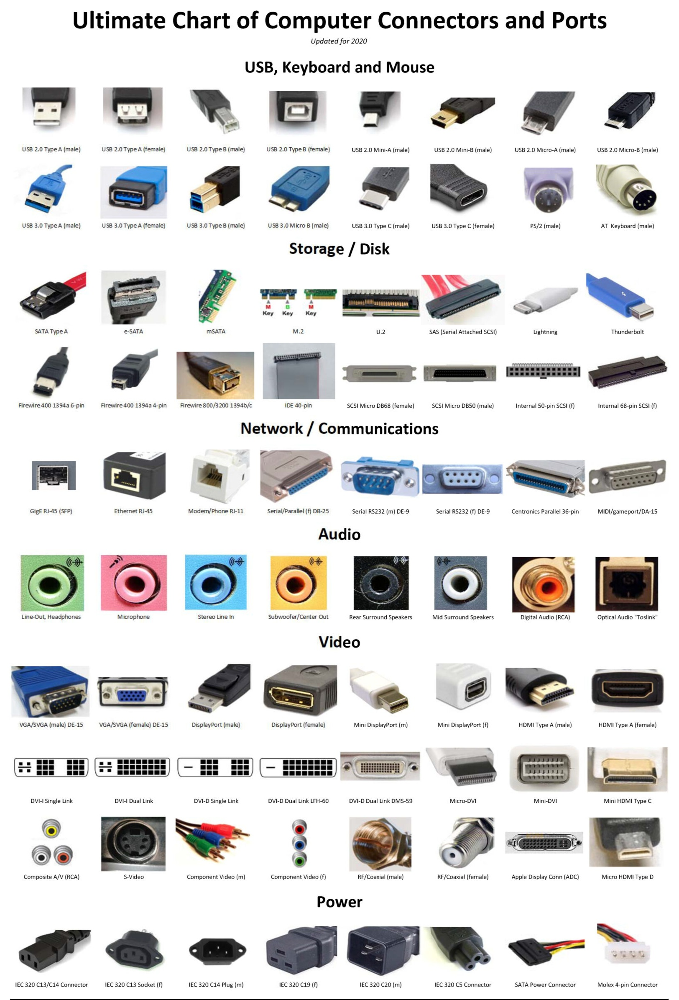

Einführung
Hier eine Zusammenfassung für die LF2-Klassenarbeit.

Bild Quelle: lystloc
Hardware
Adapter
Different Adapter Types

Bild Quelle: prrcomputers
{kind=link}
Important Mainboard Adapters

Bild Quelle: notebooksbilliger.de

Bild Quelle: reichelt.de
Mainboard
Was ist das Motherboard?
Computerwissen.de:
Das Mainboard (auch Motherboard, Hauptplatine) ist die zentrale Platine (Leiterplatte) eines Computers.
Es sorgt dafür, dass alle Komponenten eines Rechners miteinander in Verbindung stehen, arbeiten und den Computer so zum Laufen bringen können.
Auf dem Mainboard befinden sich die jeweiligen Bausteine (z. B. der Prozessorsockel für die CPUs, Kühlkörper), Schnittstellen für weitere Komponenten wie beispielsweise Peripheriegeräte (z. B. Tastatur, Drucker) sowie Steckplätze für Erweiterungskarten bzw. Steckkarten (z. B. zusätzliche Grafikkarte).
Bestandteile der Hauptplatine

Bild von: heise.de
Wichtigste Komponenten eines Mainboard
Wichtigste Komponenten eines Motherboards (kurz & übersichtlich):
- Chipsatz: Verbindet und steuert die Kommunikation zwischen CPU, RAM, Speicherlaufwerken und Schnittstellen.
- CPU-Sockel: Aufnahme für den Prozessor; muss zur jeweiligen CPU (Intel/AMD, Sockeltyp) passen.
- RAM-Steckplätze: Slots für den Arbeitsspeicher, der für die Ausführung von Programmen benötigt wird.
- PCIe-Steckplätze: Erweiterungssteckplätze für Grafikkarten, Netzwerk-, Soundkarten u. a.
- Grafiksteckplatz (PCIe x16): Spezieller PCIe-Steckplatz für Grafikkarten (AGP ist veraltet).
- BIOS-/UEFI-Chip: Startet den Computer, prüft die Hardware und lädt das Betriebssystem.
- SATA-Anschlüsse: Verbindung für HDDs, SSDs und optische Laufwerke.
- Stromanschlüsse: Versorgen Mainboard und CPU mit Strom; Kompatibilität zum Netzteil ist wichtig.
- Kühlungsanschlüsse: Pins für CPU- und Gehäuselüfter zur Wärmeabfuhr.
- Schnittstellen: USB, LAN, Audio, HDMI, VGA und weitere Anschlüsse für Peripheriegeräte.
Datenübertragung
Datengrößen
| Dezimal (SI) | Abk. | Umrechnung | Binär (IEC) | Abk. | Umrechnung |
|---|---|---|---|---|---|
| Bit | b | – | Bit | b | – |
| Byte | B | 8 bit | Byte | B | 8 bit |
| Kilobyte | KB | 1.000 B (10³ B) | Kibibyte | KiB | 1.024 B (2¹⁰ B) |
| Megabyte | MB | 1.000 KB (10⁶ B) | Mebibyte | MiB | 1.024 KiB (2²⁰ B) |
| Gigabyte | GB | 1.000 MB (10⁹ B) | Gibibyte | GiB | 1.024 MiB (2³⁰ B) |
| Terabyte | TB | 1.000 GB (10¹² B) | Tebibyte | TiB | 1.024 GiB (2⁴⁰ B) |